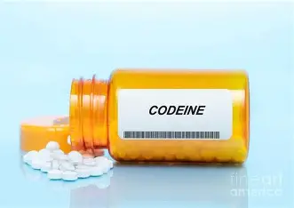

When you first use a drug, a small amount makes you feel good. But over time, your body gets used to it and you need more and more to feel the same way. This is called building a tolerance. If you find yourself needing bigger doses to get the same feeling, that's a sign you're becoming addicted. This is one of the first warning signs that someone needs help.
Withdrawal happens when you try to stop using a drug and your body rebels. You might feel sick, anxious, sweaty, shaky, or have bad pain. Your body has gotten so used to the drug that it doesn't know how to work without it. These symptoms are so bad that many people go right back to using to make them stop. Withdrawal is a sign that you're addicted and need real medical help to quit safely.
When someone is addicted, people around them notice big changes in how they act. They might stop hanging out with old friends and only see other people who use drugs. They might lie about where they are or how much they're using. They might become secretive, angry, or not care about things they used to love. These behavior changes are red flags that addiction is taking over.
